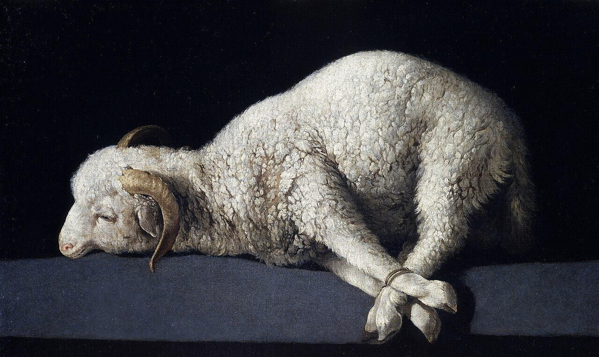
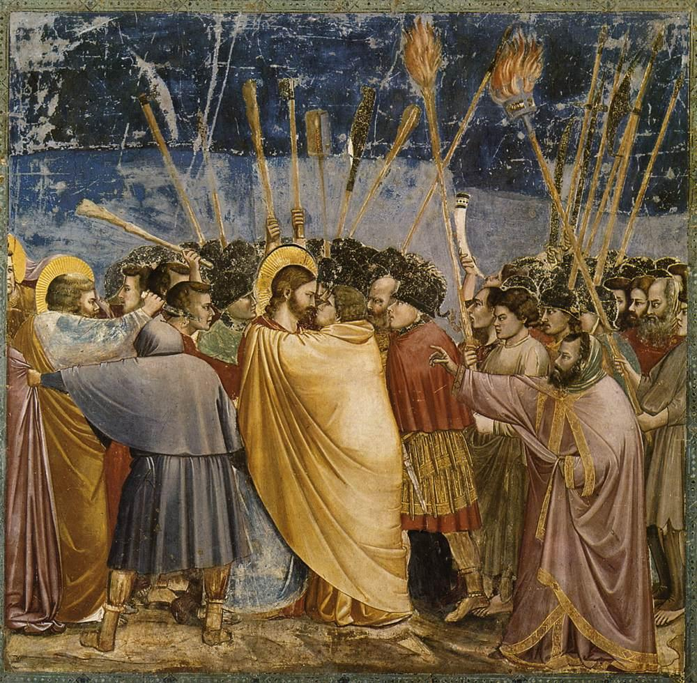
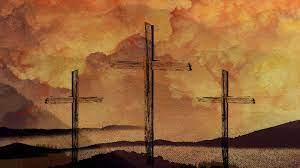

被钉在十字架上的王

- 主要经文： 路加福音23:26–49；上下文：路22–24。
- 中心信息： 耶稣这位君王甘愿为罪人舍命，拯救信靠祂的人，并以复活显明胜利。
- 学习目标： 跟随受难故事，认识十字架的救赎意义，回应这位王。
- 引入问题： 一位被捕、被嘲笑、被处死的人，为什么仍值得我们信靠？
第一部分｜故事：从晚餐走向被捕

- 上一课，耶稣以饼和杯说明：祂要为门徒舍身流血，立新的约（路22:19–20）。
- 晚餐后，祂往橄榄山祷告，在痛苦中顺服父的旨意（路22:39–42）。
- 犹大带人前来，以亲嘴出卖祂；耶稣被捕，带到大祭司的宅里（路22:47–54）。
- 天亮后，祂受公会审问，又被带到彼拉多面前；故事来到审判台（路22:66–23:1）。
故事二｜无罪的耶稣被判死刑
- 控告者说耶稣自称为王；彼拉多审问祂，却查不出祂有罪（路23:2–4）。
- 希律戏弄祂，把祂送回；彼拉多再次指出，祂没有该死的罪（路23:8–15）。
- 众人要求释放作乱杀人的巴拉巴，催逼彼拉多把耶稣钉十字架（路23:18–23）。
- 彼拉多顺从他们的要求：有罪的人获释，无罪的耶稣被交出去（路23:24–25）。
故事三｜走向髑髅地

- 古利奈人西门被抓来，背着十字架跟随耶稣；许多百姓和妇女跟在后面（路23:26–27）。
- 耶稣没有只接受同情，祂警告妇女们：要为自己和儿女将面对的灾难哀哭（路23:28–31）。
- 两个犯人也被带去处死；他们来到髑髅地，耶稣被钉在两人中间（路23:32–33）。
- 停下来想： 看见耶稣受苦令人难过；但我们是否也认真面对自己的罪与神的审判？
故事四｜十字架旁的嘲笑
- 耶稣为加害祂的人求父赦免；兵丁却拈阄分祂的衣服（路23:34）。
- 官府和兵丁嘲笑祂：既然是基督、是王，就救自己吧！（路23:35–37）
- 祂上方的牌子写着：“这是犹太人的王。”（路23:38）
- 故事的张力： 人们用能否逃脱十字架来判断祂；耶稣却仍在那里。祂究竟要怎样拯救？
故事五｜同样受刑，两种回应
- 一个犯人也讥诮耶稣，要求祂救自己和他们（路23:39）。
- 另一个责备他不敬畏神，承认自己受刑是应得的，并承认耶稣无辜（路23:40–41）。
- 他转向耶稣，求祂得国降临时记念自己（路23:42）。
- 两人都面对死亡；这一个却向被钉的耶稣求恩，把盼望放在祂的国里。
故事六｜被钉的王赐下应许
- 耶稣回答：“今日你要同我在乐园里了。”（路23:43）
- 今日： 耶稣给他确定的盼望；死亡不能取消这应许。
- 同我： 应许的中心，是与救主同在。
- 这个犯人不能靠过去的表现夸口；他承认罪，向耶稣求怜悯，领受祂的话（路23:40–43）。
- 转折： 被人讥笑的王，正在向一个罪人施恩。
故事七｜黑暗中，耶稣交付生命
- 约从中午到下午三时，遍地黑暗；圣殿的幔子从中间裂开（路23:44–45）。
- 耶稣向父交托自己的灵魂，随后断气；祂真实地经历了死亡（路23:46）。
- 百夫长看见这些事，归荣耀给神，承认耶稣是义人；围观的人捶胸回去（路23:47–48）。
- 约瑟领了耶稣的身体，安放在坟墓里；妇女们看见了安放的地方（路23:50–56）。
故事八｜坟墓不是结局
- 七日的头一日，妇女来到坟墓，却不见耶稣的身体；天使宣告祂已经复活（路24:1–8、23）。
- 复活的耶稣向门徒显现，让他们看祂的手脚，并在他们面前吃东西（路24:36–43）。
- 祂解释：受害与复活成全了圣经，并吩咐人奉祂的名传悔改、赦罪的道（路24:44–47）。
- 故事带来的问题： 这位复活的王，为什么必须经过十字架？下面从整本圣经与改革宗信仰来认识。
第二部分｜改革宗神学：神的计划与人的责任
- 十字架发生在神的救赎计划中；使徒同时指出，杀害耶稣的人要为自己的恶行负责（徒2:22–24）。
- 耶稣甘愿舍命，顺服父的旨意；祂并非被迫完成一件自己不愿意的事（约10:17–18）。
- 改革宗归纳： 神的主权没有使人犯罪变成无罪，也没有取消基督甘愿的顺服。
- 《西敏信条》3.1、8.4：神不是罪的创始者；基督甘愿承担中保的职分。
改革宗神学二｜代赎：无罪的主担当罪的刑罚
- 代赎： 基督站在罪人的地位，担当他们应受的刑罚，使他们与神和好（赛53:5–6；彼前3:18）。
- 神没有忽略罪；祂藉基督的救赎显明自己的公义，也称信耶稣的人为义（罗3:24–26）。
- 父爱罪人，赐下祂的儿子；子也爱我们，为我们舍己（约3:16；加2:20）。
- 《西敏小要理问答》第25问：基督一次献上自己，满足神的公义，使我们与神和好。
改革宗神学三｜因信称义：得救是恩典
- 称义： 神赦免信徒的罪，因基督的义接纳他们；这恩典藉信心领受（罗3:22–24）。
- 信心是倚靠基督，不能成为向神换取救恩的功劳；得救本乎恩典，神使死在罪中的人活过来（弗2:1–9）。
- 回看那犯人：他承认罪、求耶稣记念他；救恩的根据在基督，不在他为耶稣辩护的表现（路23:40–43）。
- 《西敏小要理问答》第33问概括因信称义；善行是蒙恩后的果子（弗2:10）。
改革宗神学四｜祭司也是君王
- 祭司： 基督献上自己，成就一次而永远的赎罪；我们无需再为自己补足赎罪祭（来10:10–14）。
- 君王： 祂藉十字架胜过仇敌，复活后仍掌权，最终要消灭死亡（西2:14–15；林前15:25–26）。
- 《西敏小要理问答》第26问：基督使我们归服祂，治理、保护我们，制伏仇敌。
- 与我有关： 信靠祂，也学习听从祂；祂的国度给我们面对苦难与死亡的盼望。
第三部分｜回应这位王
- 面对自己的罪： 像那犯人一样诚实承认，求基督赦免；不用与别人比较来替自己开脱（路23:40–43）。
- 面对同伴压力： 当群聊嘲笑别人时，学习停止附和，诚实、温柔地说话；求主帮助我们活出祂的爱（弗4:29、32）。
- 面对痛苦： 主的应许给我们与祂同在的盼望；信靠祂不等于立刻脱离所有困难（路23:43；罗8:35–39）。
- 本周行动： 为一件具体的罪向神认罪，并采取一个合宜的改正行动；这是感恩的回应，不是赚取救恩。
讨论｜你怎样认识十字架上的王？
- 官府、兵丁和那犯人怎样理解“拯救”？耶稣给另一个犯人的应许有什么不同？（路23:35–43）
- 那个求恩的犯人承认了哪些事实？为什么不能说他靠一次好表现换到乐园？（路23:40–43；弗2:8–10）
- 基督既是祭司又是君王，怎样帮助你理解祂为何舍命、又为何值得信靠？（来10:12–14；林前15:25–26）
- 如果朋友说“神若爱我，就该马上解决我的困难”，你会怎样用本课经文回应？
总结｜从被弃绝到施行拯救
- 故事： 被捕、被判、被钉、受死、埋葬；第三日，耶稣复活了（路22–24）。
- 福音： 无罪的救主担当罪人的罪，使信靠祂的人得赦免、与神和好（彼前3:18）。
- 回应： 悔改信靠祂，领受恩典，在生活中顺服这位王（路24:46–47；弗2:8–10）。
- 记住这一句： 被钉的耶稣是拯救罪人的王；祂已经复活，我们可以信靠祂。
References
- 圣经： 路加福音22–24；以赛亚书53；罗马书3:21–26；以弗所书2:8–10；参阅各页经文。
- 指定参考： 任运生，[《三个十字架——路加福音信息之六十七》](https://www.cclife.org/View/Article/4352)，生命季刊；[全文镜像](https://web2.cclife.space/post/4352)。参考两位犯人的回应对照，故事以圣经为准。
- 改革宗依据： [《西敏信条》](https://www.opc.org/wcf.html)3.1、8.4；[《西敏小要理问答》](https://www.opc.org/sc.html)25、26、33问；本课采用中文概述。
- 图片： 沿用仓库现有图片；羔羊画为 Francisco de Zurbarán，犹大之吻为 Giotto。原作属公版；现有文件的来源、复制版本授权与其余图片许可未核实，详见配套研究笔记。